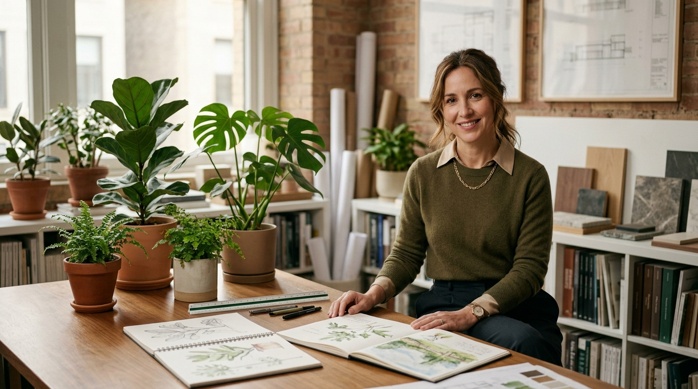

Restauramos a natureza original em espaços públicos e corporativos através da biodiversidade viva.
Uma simbiose perfeita entre a flora e a fauna autóctone. A ecologia como o coração de cada jardim.
A Alma da Marca BioBloom

“BioBloom é a expressão máxima da simbiose viva: onde as flores nativas devolvem abrigo e alimento
aos insetos locais, regenerando a essência da natureza.”
Repor a Natureza Original nos Espaços Verdes
O nome BioBloom nasce da nossa profunda paixão por criar jardins de biodiversidade
autênticos, amigos da flora e da fauna local. A nossa grande missão é ajudar a repor a natureza
original de espaços verdes públicos ou que pertençam a empresas e corporações.
Muitos relvados convencionais tornaram-se desertos verdes sem vida. A verdadeira transformação destes
jardins acontece através da plantação estratégica de espécies de flores locais,
cuidadosamente selecionadas para fornecer abrigo, néctar e alimento contínuo às várias espécies de
insetos e polinizadores autóctones.
Em essência, BioBloom significa uma simbiose perfeita entre a fauna e a flora locais e
nativas. Aqui, a ecologia é o principal foco dos jardins — sem pesticidas
químicos, com solos biologicamente ativos e com respeito rigoroso pelos ciclos naturais do ecossistema.
Espaços Públicos & Empresariais
Transformação de parques municipais, campus corporativos e sedes de empresas
em marcos de sustentabilidade e responsabilidade ecológica.
Flores Locais & Abrigo para Insetos
Plantação de espécies autóctones que garantem alimento essencial a abelhas
solitárias, borboletas e fauna auxiliar benéfica.
Foco 100% Ecológico & Simbiose Viva
Equilíbrio biológico autossuficiente, eliminação total de químicos e gestão
hídrica consciente para as gerações futuras.
Os Nossos Serviços
01
Jardins de Biodiversidade
Restauro da natureza original em espaços públicos e campus empresariais através de ecossistemas vivos
e equilibrados.
Natureza Original Simbiose Fauna-Flora Impacto ESG
02
Plantação de Flores Locais & Refúgios
Introdução de espécies florais autóctones que fornecem alimento contínuo e abrigo indispensável às
várias espécies de insetos locais.
Flores Autóctones Abrigo de Insetos Polinização Ativa
03
Manutenção Ecológica Especializada
Gestão sustentável com zero pesticidas químicos, salvaguardando os insetos benéficos, a microfauna do
solo e o ciclo biológico natural.
Zero Químicos Proteção à Fauna Solo Vivo
04
Regeneração para Empresas & Municípios
Conversão de relvados tradicionais de alto consumo em corredores ecológicos autossustentáveis com
forte identidade biológica.
Desenvolvido com recurso a ferramentas generativas de inteligência artificial de última geração e
curadoria científica de Maria Echegoyen, este documentário ilustra visualmente a transformação radical
de solos degradados em santuários vivos de flora nativa.